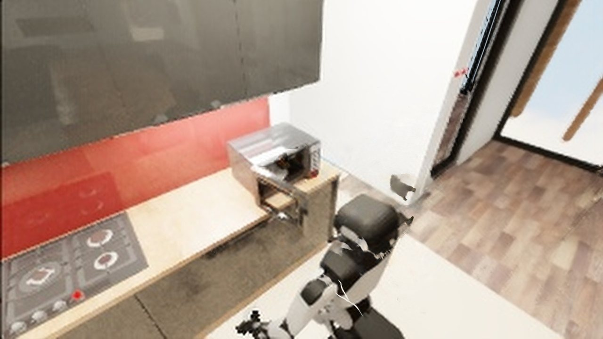
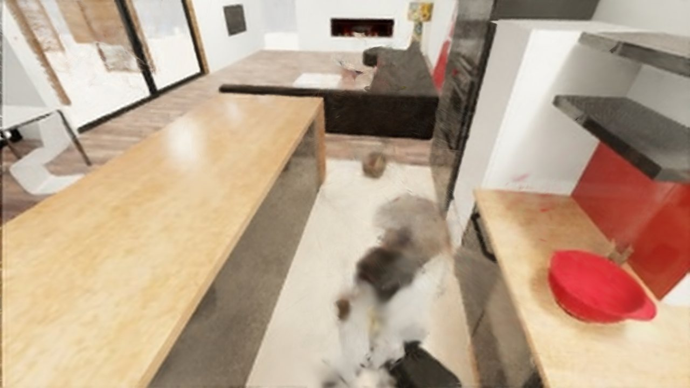
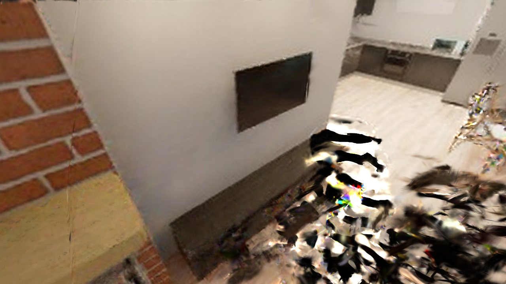
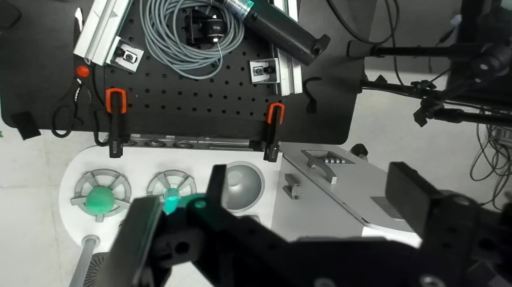
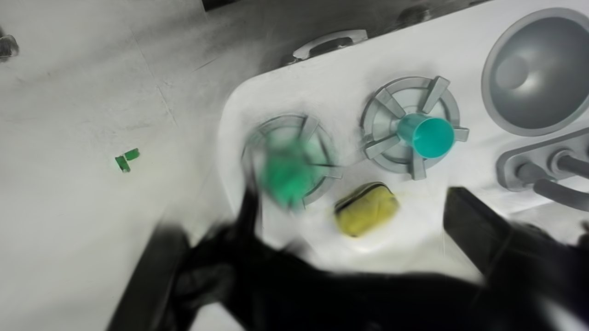
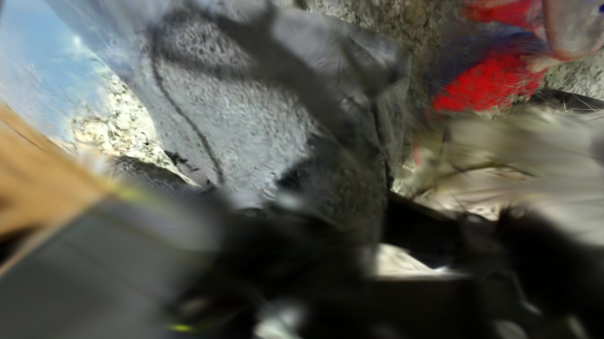
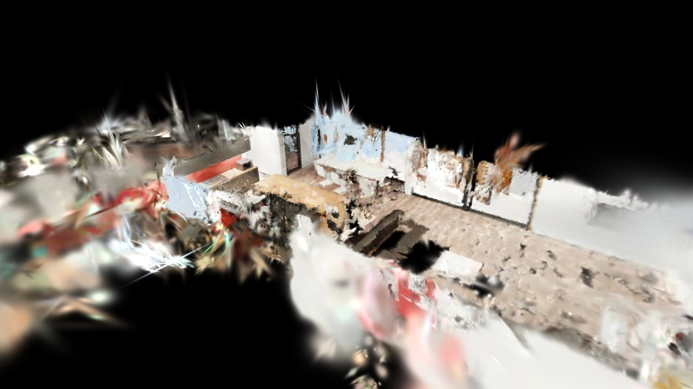

Fifteen robot-dataset reconstructions now load in the studio: six BEHAVIOR tasks (BEHAVIOR-1K simulation episodes, via the PointWorld release) and nine DROID scenes (real Franka teleop). Pick either with the Scene tab's new dataset filter.
hala:8090
Slurm job 876053
RTX A6000
allocation ends ~13:55 UTC
The studio renders on the cluster GPU and streams JPEG frames, so the browser never receives the Gaussians — a laptop can drive a 3 M-splat scene. Reach the running server through an SSH tunnel:
ssh -L 8090:hala:8090 <login-host> # then open http://localhost:8090
To start your own, from the PhysicalView checkout:
PORT=8090 STUDIO_ARGS="--scene behavior_task-0020" sbatch run/studio.sbatch
PORT=8090 STUDIO_ARGS="--scene droid_iprl_sat_oct_14_20_58_47_2023" sbatch run/studio.sbatch
tail -f outputs/logs/studio_<jobid>.log # prints the node and the tunnel line
--scene is new: it preselects the result set, preselects its dataset
filter, and loads the scene at startup, so the first browser to connect already
sees it.
Full kitchens and living rooms from BEHAVIOR-1K episodes. The robot is part of the release frames, so it is baked into the Gaussians rather than posed — you see it standing in the room, not driven by the Robot tab.
Object yield is near zero and that is a data limit, not a bug: SAM3 discovery on 320×180 source frames finds almost nothing, so five of the six tasks have an empty object table. Show these scenes for reconstruction and the exported room.



| result set | holdout PSNR | Gaussians | obj / acc | scene.xml |
|---|---|---|---|---|
| behavior_task-0020 | 17.32 | 2,068,618 | 1 / 0 | yes |
| behavior_task-0045 | 15.00 | 1,128,463 | 0 / 0 | yes |
| behavior_task-0023 | 14.70 | 442,997 | 0 / 0 | yes |
| behavior_task-0027 | 14.13 | 544,265 | 0 / 0 | yes |
| behavior_task-0002 | 13.83 | 585,191 | 0 / 0 | yes |
| behavior_task-0011 | 10.24 | 1,325,326 | 0 / 0 | no |
Real lab benches and kitchens from the DROID rig. These carry the object pipeline:
droid_iprl_sat (5 registered) and droid_iris (4) have
assets, collision parts and an exported scene.xml.
Every DROID camera is close to the table — one is wrist-mounted — so snapping to a camera frame lands you in a close-up, and that close-up is where the reconstruction is sharpest. Pull back far and it falls apart; see the note below.



| result set | holdout PSNR | Gaussians | obj / acc |
|---|---|---|---|
| droid_iprl_sat_oct_14 | 21.74 | 1,118,332 | 6 / 5 |
| droid_tri_thu_sep_21 | 21.08 | 2,192,781 | 0 / 0 |
| droid_pennpal_sat_apr_29 | 20.97 | 551,662 | 0 / 0 |
| droid_rpl_mon_jun_5 | 20.16 | 625,450 | 0 / 0 |
| droid_iprl_thu_aug_24 | 20.03 | 1,112,286 | 0 / 0 |
| droid_rail_tue_oct_24 | 18.70 | 667,270 | 1 / 1 |
| droid_iris_mon_apr_17 | 18.38 | 2,893,808 | 10 / 4 |
| droid_real_wed_jun_7 | 17.90 | 3,005,965 | 0 / 0 |
| droid_autolab_fri_jul_14 | 16.13 | 2,016,150 | 0 / 0 |

pi05_tasks.json, so there is no authored task to
pick and no policy rollout to run. That needs Export MJCF → Generate tasks in the
Generate tab first.
_train_report.json: a held-out
frame from the same capture. It measures reconstruction quality, not generalization
to new viewpoints — which is exactly the limit the point above describes.
run_behavior_recon.sh writes outputs/behavior_task-0020
but builds the scene as behavior_task0020, dashes stripped. The viewer
resolved the dashed name and found nothing, so all six BEHAVIOR entries showed
no splat. The scene id now strips the dash.